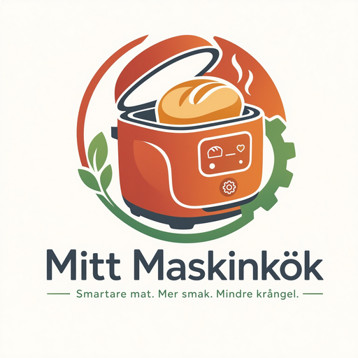

Skanna & börja laga
- ✅ Verifierade program & tider per maskin
- 🧮 Livekalkyl – pris & näring på allt
- 🧑🍳 Kockläge med timers & köksradio
🖨️ Så skriver du ut: Ctrl+P → pappersstorlek sköts av sidan (85×55 mm, en sida per kort). Dubbelsidig skrivare: välj "vänd längs kortsidan". Annars: skriv ut sidorna var för sig på kortpapper.
